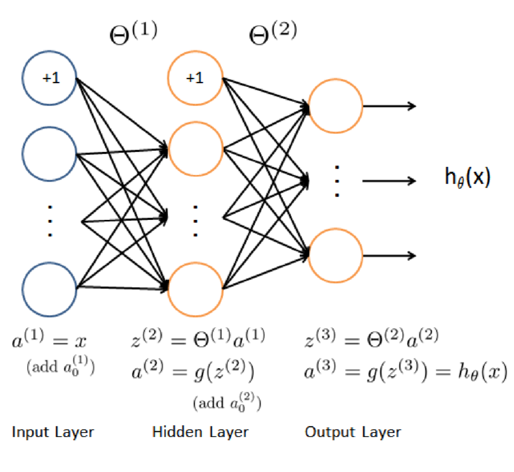
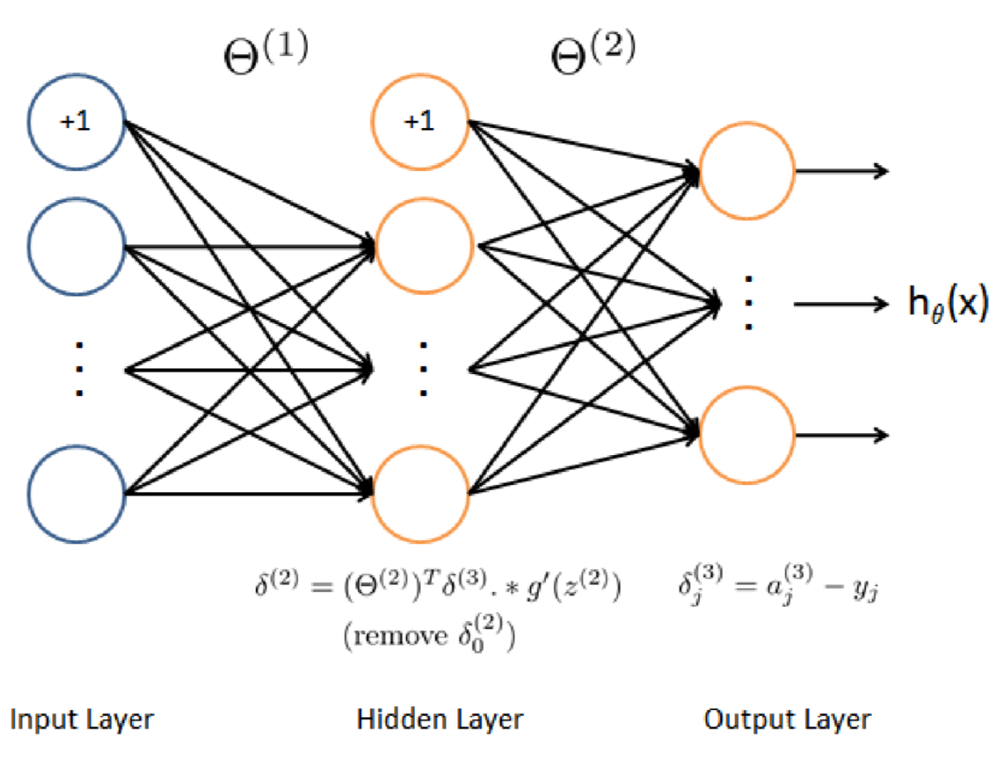

神经网络要点理解
第一次接触神经网络总是被其诸多的符号弄的眼花缭乱。几个重要的符号包括：
- 样本的个数\(m\);
- 单个样本的feature个数\(n\);
- 神经网络的层数\(L\);
- 神经网络输出的类别数量\(K\);
假设我们对5000幅\(20\times 20\)的手写数字灰度图像进行识别，则\(m=5000,n=400,K=10\)。对于本文用到的神经网络，\(L=3\)。
1 损失函数及其正则化
一个未经正则化的神经网络损失函数为：
\begin{equation} \label{eq:1} J(\Theta) = \frac{1}{m} \sum_{i=1}^{m} \sum_{k=1}^{K} \big[ - y_{k}^{(i)}\log ((h_{\theta}(x^{(i)}))_{k}) - (1-y_{k}^{(i)})\log (1- (h_{\theta}(x^{(i)}))_{k} ) \big] \end{equation}其中\(h_{\theta}(x)\)的计算如下：

此处\(L=3\).
针对上面的公式，我们有\(x^{(i)}\)表示第\(i\)个样本的矢量，这个矢量的大小是\(400\times 1\)。\(h_{\theta}(x^{(i)})_{k}\)表示第\(i\)个输入在第\(K\)个类上的输出。每一个输入样本\(x^{(i)}\)都会在神经网络的输出层产生\(K\)个输出，表示\(x^{(i)}\)属于这\(K\)个类中每个类的可能性。
当我们给定\(\Theta_{1}\)，\(\Theta_{2}\)时，我们可以根据上图来计算每一个\(h_{\theta}(x^{i})\)，进而根据\(J(\Theta)\)的公式来计算损失函数。
注意在计算的过程中，我们遇到的一些矩阵(从上图到\(J(\Theta)\)的计算过程中遇到的矩阵)的维度为：
| 矩阵 | 维度 |
|---|---|
| \(a^{(1)}\) | \(5000\times 401\) |
| \(\Theta^{(1)}\) | \(25\times 401\) |
| \(z^{(2)}\) | \(25\times 5000\) |
| \(a^{(2)}\) | \(26\times 5000\) |
| \(\Theta^{(2)}\) | \(10\times 26\) |
| \(z^{(3)}\) | \(10\times 5000\) |
| \(a^{(3)}\) | \(10\times 5000\) |
| \(Y\) | \(10\times 5000\) |
其中\(a^{(1)}\) 为添加了\(a_{0}^{(1)}\)后的矩阵；\(a^{(2)}\)为添加了\(a_{0}^{(2)}\)后的矩阵；\(Y\)为把1,2,…,10映射为矢量后的矩阵。
\(J(\Theta)\)计算的是5000个用户在10个类上的cost之和。所以式~(\ref{eq:1})的方括号中如果是矩阵的话应该是一个\(10\times 5000\)的矩阵。
计算\(J(\Theta)\)的部分代码为：
a1 = [ones(m,1) X]; z2 = Theta1*a1'; a2 = 1./(1 + exp(-z2)); a2 = [ones(1,size(a2,2));a2];%add a_0^(2) z3 = Theta2 * a2; a3 = 1./(1 + exp(-z3));%10X5000 temp = eye(num_labels); Y = temp(:,y); J = (Y .* log(a3) + (1-Y).* log(1-a3))./m; J = -1*sum(sum(J));
注意为了支持任何大于\(K>3\)的分类，代码中不允许出现任何的magic number。比如：
temp = eye(num_labels);
就不能写成：
temp = eye(10);
虽然在这个例子中 num_labels=10 magic number 也是不被允许的。
接下来是正则项的计算：
\begin{equation} \label{eq:2} \frac{\lambda}{2m} \big [ \sum_{j=1}^{25}\sum_{k=1}^{400} (\Theta_{j,k}^{(1)})^{2} + \sum_{j=1}^{10}\sum_{k=1}^{25}(\Theta_{j,k}^{2})^{2} \big] \end{equation}同样magic number是不被允许的。
2 后向传递算法
后向传递算法的步骤为：
- 给定一个训练样本\(x^{(t)},y^{(t)}\) 首先计算前向过程，直到输出\(h_{\theta}(x)\)
- 对每个层\(l\)的每个节点\(j\)，计算误差项\(\delta_{j}^{(l)}\)，这个误差项用来度量这个节点对输出负多大的“责任”；
- 对于输出节点，我们直接计算网络的activation输出和真实的目标值之间的差即可。用这个差值作为\(\delta_{j}^{(3)}\)，对于隐藏的层，计算\(\delta_{j}^{(l)}\)时需要加权考虑层\(l+1\)上的错误。

根据上图，我们需要循环处理所有样本，一次处理一个，所以一定会有一个 for t=1:m 。在第\(t\)次迭代的时候处理第\(t\)个样本。循环内的步骤为：
- 设定输入层的值为\(x^{t}\)，执行前向过程，计算\(z^{(2)},a^{(2)},z^{(3)},a^{(3)}\)。注意在计算过程中需要为\(a\)添加一个bias项。
- 对于层3中的每一个输出单元，设定\(\delta_{k}^{(3)} = ( a_{k}^{(3)} - y_{k})\) 其中\(y_{k}\)是二进制数表示当前的训练样本是不是第\(k\)类，如果是，则\(y_{k} = 1\)；如果当前样本属于其他类则\(y_{k}=0\)。
- 对隐藏层\(l=2\)，设定：\(\delta^{(2)} = (\Theta^{(2)})^{T}\delta^{(3)}.*g^{'}(z^{(2)})\)
- 从这个样本中累计梯度值。\[ \Delta^{(l)} = \Delta^{(l)} +\delta^{(l+1)}(a^{(l)})^{T} \] 注意要去掉\(\delta_{0}^{(2)}\)
- 获得梯度值：\[\frac{\partial}{\partial \Theta_{ij}^{(l)}}J(\Theta) = D_{ij}^{(l)} = \frac{1}{m}\Delta_{ij}^{(l)}\]
在matlab实现的过程中，也需要仔细核对相关变量的维度。由于我们在计算\(a^{(2)},a^{(3)},z^{(2)},z^{(3)}\)的过程中使用的是矢量计算，在计算\(\frac{\partial}{\partial \Theta_{ij}^{(l)}} J(\Theta)\)的过程中我们也可以使用全矢量计算。
%% calculate the theta gradient delta3 = a3 - Y; temp = Theta2; temp(:,1) = 0; Theta2_grad = delta3 * a2'./m + lambda./m*temp ; delta2 = Theta2(:,2:end)'*delta3 .* sigmoidGradient(z2); temp = Theta1; temp(:,1) = 0; Theta1_grad = delta2 * a1./m + lambda./m*temp;
需要注意的是在正则化过程中需要把\(\Theta\)中对应bias项的那些值去掉，在代码中我才用了置零处理。另外在计算\(\delta^{(2)}\)的过程中也需要把\(\Theta_{2}\)中与bias相关的项去掉。